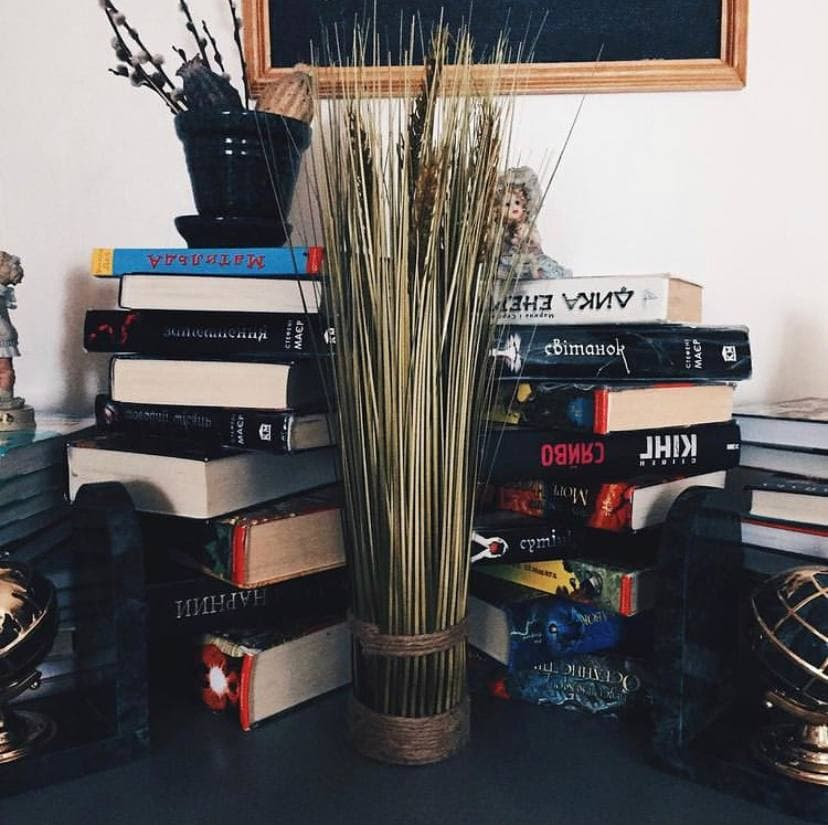
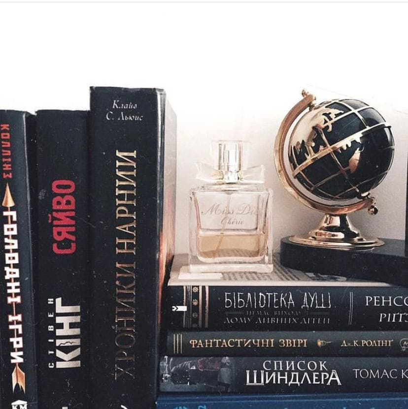

Book recommendations
Classics
1."Jane Eyre"|Charlotte Bronte. Jane is an orphan who has experienced many hardships and bullying in her life. After settling as a governess in a rich estate, she is overwhelmed by previously unknown and very controversial feelings for the owner of the house. A story about a strong intelligent woman with high moral values.
3."White Fang"|Jack London. White Fang is a half-wolf, half-dog. His life is described from birth. The reader observes the formation of character and habits, the first difficulties and overcoming them, the meeting with the "gods" (= people), which affect the protagonist in different ways.
5.“The thorn birds”|Colin McCullough. Here love is bright and calm but it is also difficult and painful. I was fascinated by thoughtful characters. McCullough skillfully described the life of the main character Megan from an early age to old age. The chapters on Megan's children confirmed the idea that children often adopt the traits of their parents. And the problem of a difficult choice between two very important things is familiar, probably, to everyone and therefore was relatable to me.
2."The Portrait of Dorian Gray" | Oscar Wald. Dorian is a handsome young man. He receives a painting as a gift from his artist friend and through him meets Lord Henry, who greatly influences Dorian with his words and vision of the world. The story of the inner and outer beauty of man, the influence of the surrounding, and the concealment of the true essence.
4.“Wuthering Heights” | Emily Bronte. The main characters are negative but very realistic. Not everyone in this world just pours goodness and shines with happiness. In this story, love is reminiscent of addiction. It wounds the protagonist. He wants everyone around to feel bad too. I sometimes wanted to shout from the injustice and cruelty of some heroes.
1."The Goldfinch" | A long intriguing detailed story. Each storyline is very developed and keeps you in suspense. The main character Theo stole the painting from the museum after an explosion there. The painting existed for more than a century and fascinated visitors of the museum for years. Now, this picture changes Theo's life and influences the course of events.
2."The Secret Story" | About the murder of a young man who studies ancient Greek with 5 friends. The conspirators of the murder are very unexpected people who share their motives. Characters are developed so meticulously and the plot twists make it hard to put away the book and go to sleep.
1." Arch of Triumph" | With an atmosphere of war, loss, pessimism, and disappointment: in the style of Remarque. About the illegal German emigrant Ravik in France, about an unexpected meeting, love, many memories and experiences, revenge. The characters are incredibly elaborate as if you are watching living people.
2."All quiet on the Western Front" | A book about German soldiers during the First World War. Their experiences, conversations, emotions, desires. The book shows how war affects people, how a person gets used to any circumstances. Cruel, realistic, gloomy.
3."Three comrades" | The book about three friends, one of whom meets the love of his life. The pessimism of inevitability and loss immersed me completely. But characters enjoyed every moment together, they cared so much for each other. The love story touched me the most.
1.11/22/63| The protagonist has found the portal in the past and tried to prevent the assassination of US President John F. Kennedy. I wanted to know how his attempts would end, that it was impossible to put away the book. In general, stories about time travel are my favorite.
3.“Misery” | About the book author who was saved by a crazy woman (his fan) after the car accident. With broken legs he was now stuck in her remote house in the mountains. I often thought like “She is human, what can she do” and then the most shocking disgusting things happened. Humans are the scariest monsters sometimes.
5. "Pet Sematary"| For me it was the scariest King’s book. Maybe because I am not a cat person and the cat is the main antagonist in the story or maybe because the book terrified me with cruelty and unexpectedness. I got sad when an innocent, full-of-life person was hurt but I also awaited even worse things to happen. The suspense was real.
2.“The green mile” | Dramatic and strong. John Coffey was unjustly imprisoned and awaited an execution on an electric chair. He had extraordinary life-saving abilities that move the plot a lot. The book leaves with a feeling that innocent people often pay for the mistakes and cruelty of others in our world. However, sooner or later justice will prevail and teach the rotten people.
4. “On writing: A memoir of the craft” | Autobiography and tips. King recalls his childhood and his path to success in writing. There were failures, and problems with alcohol/drugs, and family troubles. King writes 6 pages a day. For him, writing is not just a "moment of inspiration" once a month, but a daily job. Useful if you are interested in how to write well, especially fiction (but not only) or are interested in King's life told by the master himself.
6. "Doctor Sleep"| The sequel of the famous “The Shining”, the classic of horrors. You do not have to read the first part to understand the second but I would recommend “The Shining” too. The story is about the man traumatized as a child by the events happening in “The Shining”. He has psychic powers and meets a teenage girl with much stronger powers. He tries to protect her from the psychic vampires who want to kidnap the girl and eat her “shine”. I worried for the main characters so much and the ending as usually in King’s stories just kept my hands sweaty from tension.
1.“Quiet: The power of introverts in the world that can’t stop talking” | Susan Kane. The author herself is an introvert and she very accurately and interestingly conveyed the feelings and inclinations of introverts. It is normal not to like big companies of friends, public speeches, new acquaintances, empty chats. Introverts have their advantages and characteristics that can lead to success and happiness. The book helped me to accept my temperament, understand my strengths and not chase the accepted standards of success.
2."451 degrees Fahrenheit"| Ray Bradbury. Anti-utopia about a world in which books become unnecessary, so people burn them. Guy Montague is a firefighter who destroys books. He secretly shows interest in them, and therefore takes risks.Where will it lead him?
3."The Collector" | John Fowles. A psychological thriller. Frederick kidnaps Miranda, whom he likes. He wants to show her his love and devotion, but what kind of love can we talk about when she is like a butterfly forcibly closed behind thick glass. The tension penetrates the bones. The book is written from the point of view of both the kidnapper and the victim.
4."A clockwork orange "| Anthony Burgess. Alex is a cruel teenager who, however, loves classical music. He robs, beats, and mocks people along with his gang. During one robbery, "friends" betray Alex and he finds himself in a mental hospital. A story about freedom, the right to choose, imposed morality.
5."The Thirteenth Tale"| Diana Setterfield. A book of the 21st century, but written in the style of the 19th: refined and sensual. A story with a riddle. Unpredictable end. Feeling her death the famous writer invited an ordinary amateur biographer to finally tell about her past, which she had long protected from journalists. Why did she invite an ordinary amateur-girl? What happened in the past?